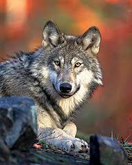
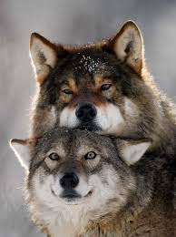
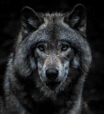
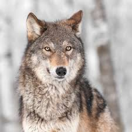
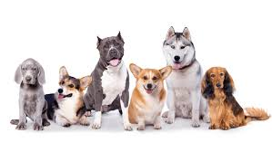

Człowiek od zawsze znajdował oparcie w naturze, w przyrodzie. Było i jest mu to potrzebne do przetrwania. Najlepszym przykładem znajdowania przez Nas, ludzi, wsparcia w otaczającym świecie jest udomowienie psa. Chyba niewielu jest takich, którzy nie posiadają choćby jednego w swoich domach. Wielowiekowa współpraca wyszła obu gatunkom na zdrowie. Człowiek zyskał nieocenionego towarzysza w pracy, zabawie i w sytuacjach zagrażających życiu, a pies - stałe zatrudnienie
i warunki godne członka rodziny. Przyjrzyjmy się zatem nieco bliżej psom!
PS. Kliknięcie dowolnego nagłówka poniżej przenosi do spisu treści.
Pochodzenie psa
Jak podaje serwis Wikipedia.pl, psy wyewoluowały od ... wilków 1.
   Tak, ja też jestem zdziwiony. Kiedy byłem dzieckiem, wszyscy mi na okrągło powtarzali, że pies nie pochodzi od wilka, a tu taka niespodzianka!
Okazuje się, że słabsze, schorowane osobniki, były wykluczane ze stada i musiały samodzielne szukać pożywienia. Nie miały większych szans na przeżycie. I tu z pomocą przyszli im ludzie, nasi przodkowie. Na początku zapewne nie mogli pogodzić się z obecnością rywali w walce o pożywienie w pobliżu swoich siedlisk, lecz wkrótce poznali się na ich świetnym węchu, wzroku i słuchu, które dawały przewagę nad zwierzyną łowną.
Skuteczny myśliwy
Wilki przebywające wśród ludzi wykształciły umiejętność rozumienia tego, co usłyszały - komend wydawanych w tamtych czasach w sposób bardzo pierwotny. Oprócz tego zachowały zachowania, które były na porządku dziennym w stadzie, czyli grupowe tropienie, zaganianie i osaczanie ofiary. Za towarzyszy, partnerów polowań służyli im już jednak ludzie, a nie inne wilki.
Członek rodziny
Skuteczność wspólnych łowów stanowiła podstawę wzajemnego zaufania, co doprowadziło do tego, że "udomowione" wilki zostały na stałe pod opieką człowieka, będąc równoprawnym partnerem. Dowodzą tego choćby groby prehistorycznych rodzin w Barcelonie, z którymi zostały pochowane "psy" 2. To tylko unaocznia, jak bardzo te pojedyncze osobniki zżyły się z naszymi przodkami. "Psy" również postrzegały nas jako partnerów. Już wtedy człowiek był uważany za "swojego", za "część stada".
Specjalizacje
Wzajemne więzi i zaufanie prowadziły, co zrozumiałe, do polegania na tych zwierzętach w coraz to liczniejszych aspektach życia. Były one wykorzystywane często w sposób zadaniowy, czyli przeznaczane do danych zadań według potrzeb. W różnych osadach ludzkich były też różne stałe zapotrzebowania, tak więc i pupile były przydzielane na stałe do zadań.  Wykorzystywanie, przeznaczanie psów stało się dziedzictwem ich kolejnych pokoleń, co w drodze ewolucji charakteryzowało wygląd, tzn. rozmiary, kolor sierści i jej długość, rozmiary i siłę mięśni, kształty pyska, uszu, ogona. Urozmaiceniu w dalszych pokoleniach poddane zostaly również masa ciała oraz narządy zmysłów, a konkretnie u różnych gatunków dominować zaczęły różne zmysły.